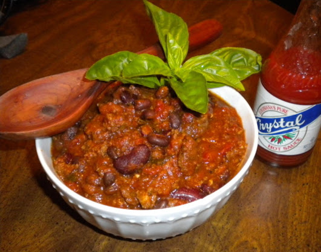

Slowcooked Gameday Chili

Ingredients
- 2 lb. Ground meat
- 2 yellow onions
- 1 can tomato sauce
- 2 cans diced tomatoes
- 2 cans dark red kidney beans
- 1 can black beans
- 1 pkg slow cooker chili seasoning
- salt and pepper
- basil
- oregano
- chili powder
- garlic salt
- cumen
Directions
- Brown meat and chopped onions in a skillet. Drain most of the fat off (but save it in a little dish)
- Put the cooked meat and onions into a large crockpot. Add chili seasoning packet to the meat, using the fat kept from the browning process to get the seasoning absorbed into the meat
- Dump in tomato sauce and diced tomatoes (drained). Rinse the kidney and black beans to remove all the liquid they are in and then add those as well. (if you are adding corn, do it the same).
- Add Basil and Oregano, salt and pepper, chili powder, garlic, etc. Anything else you'd like to add. Approximately 2 tbsp oregano, 1 tbsp salt, 1/2 tbsp pepper, chili powder, cumin, and garlic, and a handful of basil. Feel free to experiment.
- cook on low for 8 hours.
- serve with toppings like sharp cheddar cheese, sour cream, corn bread, hot sauce etc
Thoughts
As I wrote on the homepage, I originally tried this recipe with ground moose meat but it tastes just as well with ground beef! Definitely try other types of ground meats you may be surprised!
Back Home